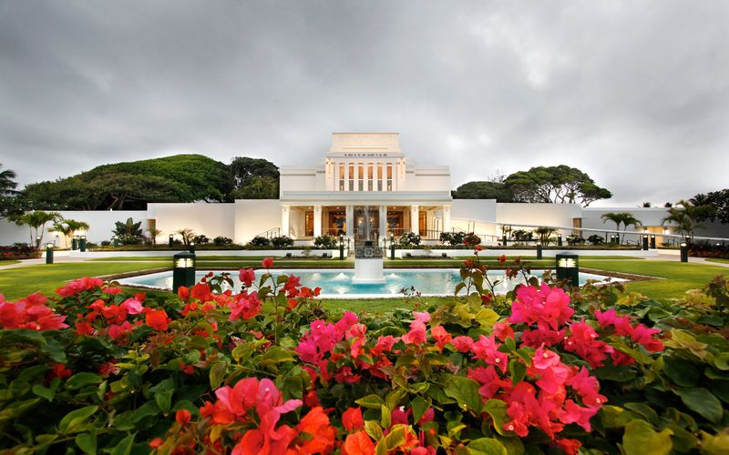

Temple Album
☰
Home
Old
New
Large
Small
Home
St. George Utah Temple
Logan Utah Temple
Manti Utah Temple
Salt Lake Temple

Laie Hawaii Temple
Cardston Alberta Temple
Washington D.C. Temple
San Diego California Temple
Rome Italy Temple
 Washington D.C. Temple
San Diego California Temple
Rome Italy Temple
Washington D.C. Temple
San Diego California Temple
Rome Italy Temple